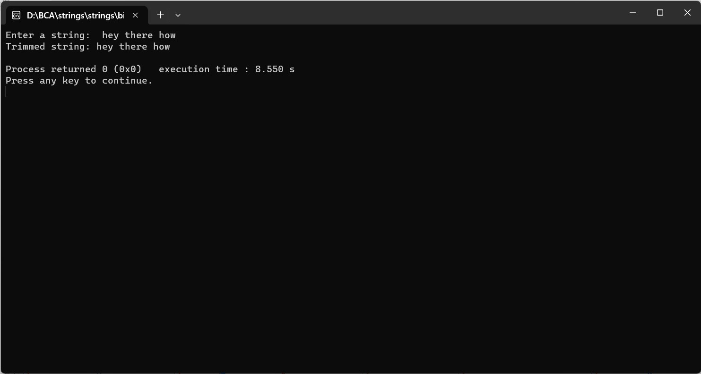

ENTER THE STRING FROM THE USER AND TRIM/ ELIMINATE THE SPACES FROM BOTH ENDS (IF ANY)
#include
#include
#include
void trimSpaces(char *str) {
int start = 0, end;
// Find the index of the first non-space character
while (isspace(str[start])) {
start++;
}
// Find the index of the last non-space character
end = strlen(str) - 1;
while (end > start && isspace(str[end])) {
end--;
}
// Shift the characters to the beginning of the string
for (int i = 0; i <= end - start; i++) {
str[i] = str[start + i];
}
// Terminate the string properly
str[end - start + 1] = '\0';
}
int main() {
char inputString[1000];
printf("Enter a string: ");
fgets(inputString, sizeof(inputString), stdin);
trimSpaces(inputString);
printf("Trimmed string: %s\n", inputString);
return 0;
}
